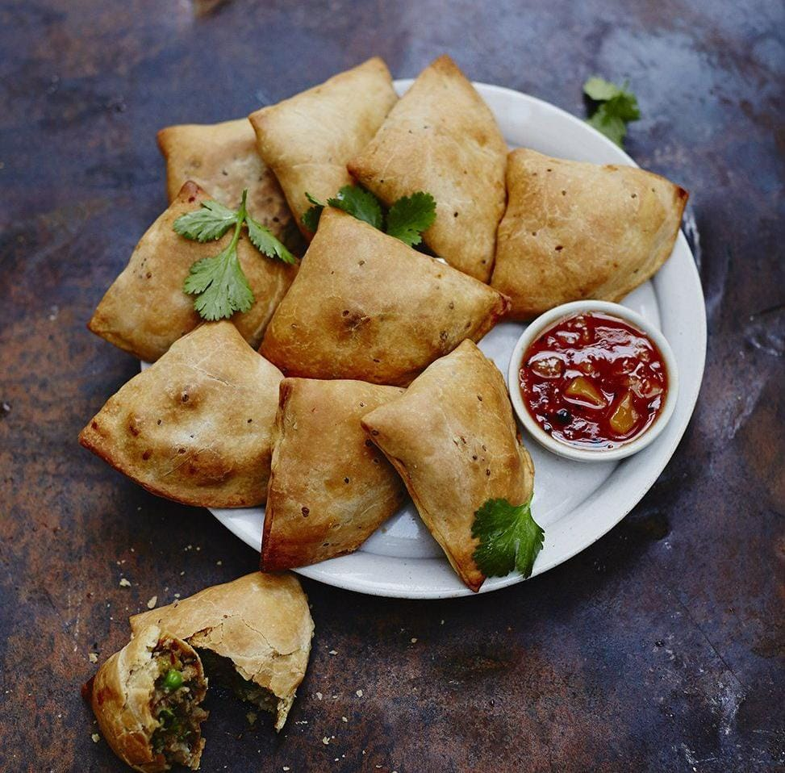

Samosa
⭐⭐⭐⭐⭐ 4.8 Rating | ⏱ 50 Minutes | 🍽 6 Servings
Category
Snacks
Difficulty
Medium
Calories
260 kcal
Cooking Style
Deep Fried
📋 Ingredients
- 2 Cups All-Purpose Flour (Maida)
- 4 Boiled Potatoes
- ½ Cup Green Peas
- 2 Green Chillies (Chopped)
- 1 tsp Ginger (Grated)
- 1 tsp Cumin Seeds
- ½ tsp Turmeric Powder
- 1 tsp Garam Masala
- 1 tsp Coriander Powder
- Salt to Taste
- 2 tbsp Oil
- Water for Dough
- Oil for Deep Frying
🍳 Required Utensils
- Mixing Bowl
- Rolling Pin
- Knife
- Deep Frying Pan
- Spatula
- Serving Plate
📖 Introduction
Samosa is one of India's most popular snacks. It has a crispy outer layer filled with a spicy potato and pea mixture. It is commonly served with mint chutney or tamarind chutney and enjoyed with hot tea.
🔬 Principle
The dough should be firm to make crispy samosas. Frying on low to medium heat ensures even cooking and produces a golden-brown, crunchy crust while keeping the filling flavorful.
👨🍳 Procedure
- Mix flour, salt and oil.
- Add water and prepare a firm dough.
- Cover and rest the dough for 20 minutes.
- Heat oil in a pan.
- Add cumin seeds and ginger.
- Add green chillies and peas.
- Add mashed potatoes.
- Mix turmeric, coriander powder, garam masala and salt.
- Cook the filling for 5 minutes.
- Roll the dough into thin circles.
- Cut each circle into two halves.
- Fold into a cone and fill with potato mixture.
- Seal the edges with water.
- Heat oil on medium flame.
- Deep fry until golden brown and crispy.
- Serve hot with chutney.
⚠ Precautions
- Do not make soft dough.
- Seal the edges properly.
- Do not overcrowd the frying pan.
- Fry on low to medium flame.
- Drain excess oil before serving.
💡 Chef Tips
- Add roasted peanuts for extra crunch.
- Use fresh coriander leaves in the filling.
- Serve immediately after frying.
- Pair with mint chutney and masala tea.
🥗 Nutrition Facts
| Nutrient | Amount |
|---|---|
| Calories | 260 kcal |
| Protein | 5 g |
| Carbohydrates | 30 g |
| Fat | 14 g |
🍽 Serving Suggestions
- Mint Chutney
- Tamarind Chutney
- Tomato Ketchup
- Masala Chai
- Cold Drinks
🌿 Health Benefits
- Potatoes provide energy.
- Green peas are rich in fiber.
- Contains vitamins from spices.
- Makes a filling evening snack.
- Best enjoyed occasionally as part of a balanced diet.
✅ Result
The prepared Samosa should have a crispy golden-brown outer crust with a spicy, flavorful potato filling. It should be crunchy on the outside, soft inside, and taste best when served hot with mint or tamarind chutney.
🎥 Watch Recipe Video
Learn the complete recipe by watching the step-by-step video.
▶ Watch on YouTube